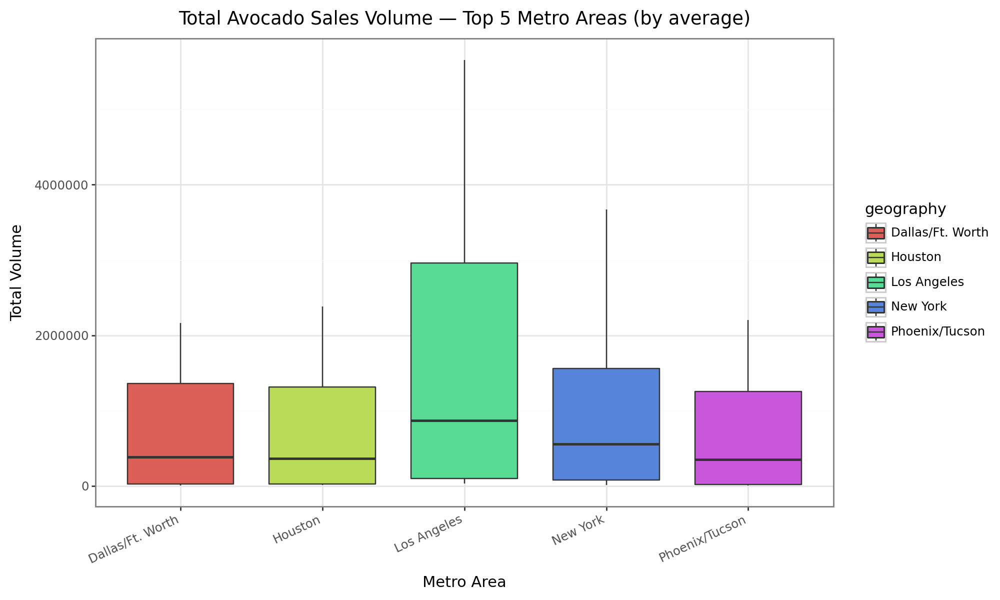
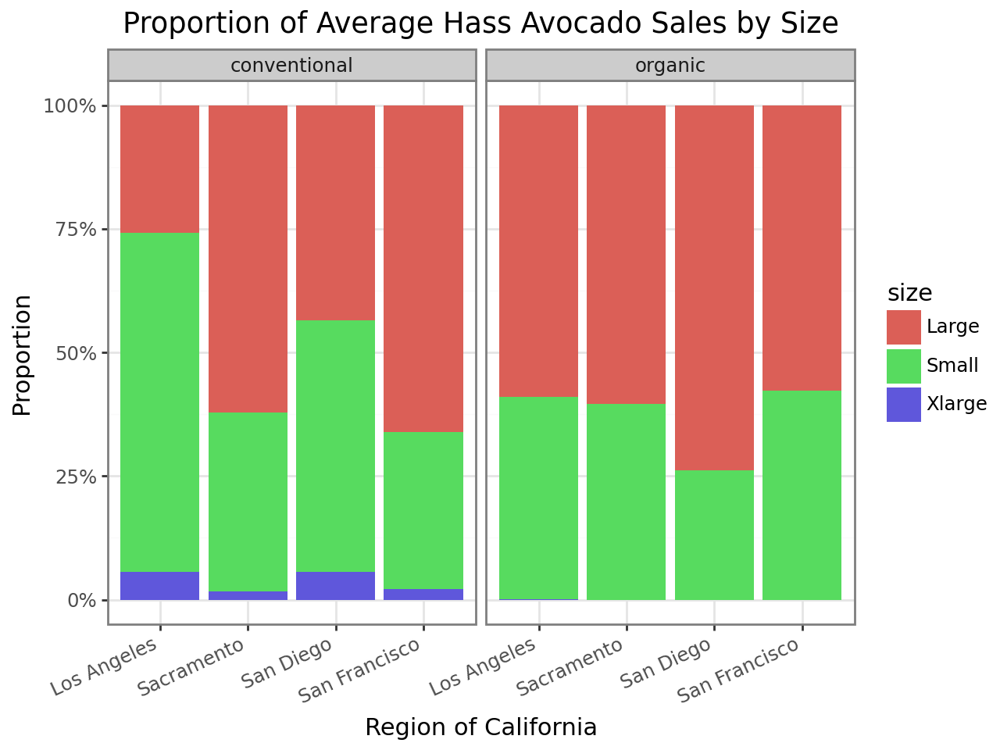
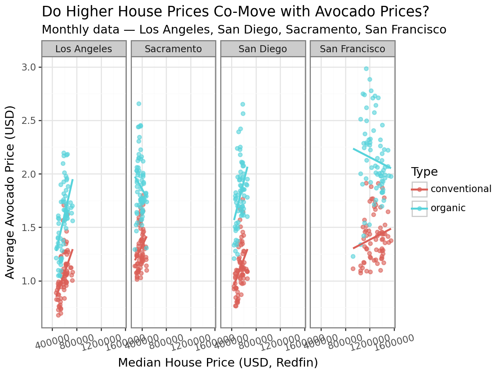

import numpy as np
import pandas as pd
from plotnine import *The avocado dataset contains time-stamped market recordsfor many U.S. geographies like Los Angeles and San Diego, some states, broader regions like, West, Northeast, and Total U.S. For each date and place, it reports the average retail price per avocado, the total number of avocados sold, and detailed breakouts by size using PLU codes, 4046 (small), 4225 (large), and 4770 (extra-large), as well as bag counts. Each record also tracks whether it was conventional or organic avocados.
avocadodata = pd.read_csv('avocado-updated-2020.csv')avocadodata.head()| date | average_price | total_volume | 4046 | 4225 | 4770 | total_bags | small_bags | large_bags | xlarge_bags | type | year | geography | |
|---|---|---|---|---|---|---|---|---|---|---|---|---|---|
| 0 | 2015-01-04 | 1.22 | 40873.28 | 2819.50 | 28287.42 | 49.90 | 9716.46 | 9186.93 | 529.53 | 0.0 | conventional | 2015 | Albany |
| 1 | 2015-01-04 | 1.79 | 1373.95 | 57.42 | 153.88 | 0.00 | 1162.65 | 1162.65 | 0.00 | 0.0 | organic | 2015 | Albany |
| 2 | 2015-01-04 | 1.00 | 435021.49 | 364302.39 | 23821.16 | 82.15 | 46815.79 | 16707.15 | 30108.64 | 0.0 | conventional | 2015 | Atlanta |
| 3 | 2015-01-04 | 1.76 | 3846.69 | 1500.15 | 938.35 | 0.00 | 1408.19 | 1071.35 | 336.84 | 0.0 | organic | 2015 | Atlanta |
| 4 | 2015-01-04 | 1.08 | 788025.06 | 53987.31 | 552906.04 | 39995.03 | 141136.68 | 137146.07 | 3990.61 | 0.0 | conventional | 2015 | Baltimore/Washington |
avocadodata = avocadodata.rename(columns={
'4046': 'small',
'4225': 'large',
'4770': 'extra_large'
})avocadodata["geography"].unique()array(['Albany', 'Atlanta', 'Baltimore/Washington', 'Boise', 'Boston',
'Buffalo/Rochester', 'California', 'Charlotte', 'Chicago',
'Cincinnati/Dayton', 'Columbus', 'Dallas/Ft. Worth', 'Denver',
'Detroit', 'Grand Rapids', 'Great Lakes', 'Harrisburg/Scranton',
'Hartford/Springfield', 'Houston', 'Indianapolis', 'Jacksonville',
'Las Vegas', 'Los Angeles', 'Louisville', 'Miami/Ft. Lauderdale',
'Midsouth', 'Nashville', 'New Orleans/Mobile', 'New York',
'Northeast', 'Northern New England', 'Orlando', 'Philadelphia',
'Phoenix/Tucson', 'Pittsburgh', 'Plains', 'Portland',
'Raleigh/Greensboro', 'Richmond/Norfolk', 'Roanoke', 'Sacramento',
'San Diego', 'San Francisco', 'Seattle', 'South Carolina',
'South Central', 'Southeast', 'Spokane', 'St. Louis', 'Syracuse',
'Tampa', 'Total U.S.', 'West', 'West Tex/New Mexico'], dtype=object)national_labels = {"Total U.S."}
us_regions = {
"West", "Northeast",
"Great Lakes", "Midsouth", "Plains",
"Southeast", "South Central",
"West Tex/New Mexico", "Northern New England"
}
us_states = {
"Alabama", "Alaska", "Arizona", "Arkansas", "California", "Colorado", "Connecticut",
"Delaware", "Florida", "Georgia", "Hawaii", "Idaho", "Illinois", "Indiana", "Iowa",
"Kansas", "Kentucky", "Louisiana", "Maine", "Maryland", "Massachusetts", "Michigan",
"Minnesota", "Mississippi", "Missouri", "Montana", "Nebraska", "Nevada",
"New Hampshire", "New Jersey", "New Mexico", "North Carolina",
"North Dakota", "Ohio", "Oklahoma", "Oregon", "Pennsylvania", "Rhode Island",
"South Carolina", "South Dakota", "Tennessee", "Texas", "Utah", "Vermont",
"Virginia", "Washington", "West Virginia", "Wisconsin", "Wyoming", "District of Columbia"
}
def classify_geo(g):
if g in national_labels:
return "National"
elif g in us_regions:
return "Region"
elif g in us_states:
return "State"
else:
return "Metro"avocadodata["geo_type"] = avocadodata["geography"].apply(classify_geo)avocado_clean = avocadodataregion_sales_2017 = (
avocado_clean[
(avocado_clean["year"] == 2017) &
(avocado_clean["type"].str.lower() == "organic") &
(avocado_clean["geography"].isin(us_regions))
]
.groupby("geography", as_index=False)["small"]
.sum()
.sort_values("small", ascending=False)
)print (region_sales_2017) geography small
7 West 1870206.29
5 South Central 1717104.19
2 Northeast 925832.36
6 Southeast 285124.34
0 Great Lakes 202487.68
1 Midsouth 186395.50
4 Plains 168583.40
8 West Tex/New Mexico 110910.95
3 Northern New England 1249.48avocado_clean["date"] = pd.to_datetime(avocado_clean["date"])
avocado_clean["year"] = avocado_clean["date"].dt.year
avocado_clean["month"] = avocado_clean["date"].dt.month_name()
avocado_clean["day"] = avocado_clean["date"].dt.daymonthly_avg_volume = (
avocado_clean.groupby("month", as_index=False)["total_volume"]
.mean()
.sort_values("total_volume", ascending=False)
)
top_month = monthly_avg_volume.iloc[0]["month"]print (top_month)Maymetro = avocado_clean[avocado_clean["geo_type"] == "Metro"]
top5_metros = (
metro.groupby("geography", as_index=False)["total_volume"]
.mean()
.sort_values("total_volume", ascending=False)
.head(5)
)
print(top5_metros) geography total_volume
20 Los Angeles 1.567566e+06
25 New York 8.631458e+05
10 Dallas/Ft. Worth 7.127519e+05
16 Houston 6.876533e+05
28 Phoenix/Tucson 6.250383e+05top5_names = top5_metros["geography"].tolist()
top5_df = metro[metro["geography"].isin(top5_names)]plot = (
ggplot(top5_df, aes(x='geography', y='total_volume', fill='geography'))
+ geom_boxplot()
+ theme_bw()
+ labs(
title='Total Avocado Sales Volume — Top 5 Metro Areas (by average)',
x='Metro Area',
y='Total Volume'
)
+ theme(
axis_text_x=element_text(rotation=25, ha='right'),
figure_size=(10, 6)
)
)
plot
ca_metros = ["Los Angeles", "San Diego", "Sacramento", "San Francisco"]
avocado_ca = (
avocado_clean[avocado_clean["geography"].isin(ca_metros)]
.copy()
)
avocado_ca["month"] = pd.to_datetime(avocado_ca["date"]).dt.to_period("M").dt.to_timestamp() #this last code GEMINI added when I was doing my OUTSIDE Data response.summary_price = (
avocado_ca
.groupby(["geography", "type"])["average_price"]
.agg(mean_price="mean", median_price="median", sd="std", n="count")
.reset_index()
)summary_price| geography | type | mean_price | median_price | sd | n | |
|---|---|---|---|---|---|---|
| 0 | Los Angeles | conventional | 1.047124 | 1.020 | 0.231167 | 306 |
| 1 | Los Angeles | organic | 1.574902 | 1.585 | 0.311722 | 306 |
| 2 | Sacramento | conventional | 1.295359 | 1.260 | 0.219177 | 306 |
| 3 | Sacramento | organic | 1.873856 | 1.840 | 0.292875 | 306 |
| 4 | San Diego | conventional | 1.113856 | 1.090 | 0.242960 | 306 |
| 5 | San Diego | organic | 1.798366 | 1.800 | 0.331655 | 306 |
| 6 | San Francisco | conventional | 1.400490 | 1.390 | 0.272060 | 306 |
| 7 | San Francisco | organic | 2.119444 | 2.060 | 0.395854 | 306 |
sp = summary_price.assign(type=summary_price["type"].str.lower())
wide = sp.pivot(index="geography", columns="type", values="mean_price")
wide["diff_conv_minus_org"] = wide["conventional"] - wide["organic"]
wide["abs_diff"] = wide["diff_conv_minus_org"].abs()
wide_sorted = wide.sort_values("abs_diff", ascending=False)
biggest_geo = wide_sorted.index[0]
biggest_geo'San Francisco'avocado_ca["type"] = avocado_ca["type"].str.strip().str.lower()
avocado_ca["type"] = pd.Categorical(avocado_ca["type"], categories=["conventional", "organic"], ordered=True)
if {"small","large","extra_large"}.issubset(avocado_ca.columns):
size_map = {"small":"Small", "large":"Large", "extra_large":"Xlarge"}
size_cols = ["small","large","extra_large"]
elif {"4046","4225","4770"}.issubset(avocado_ca.columns):
size_map = {"4046":"Small", "4225":"Large", "4770":"Xlarge"}
size_cols = ["4046","4225","4770"]
long = (
avocado_ca.melt(id_vars=["geography","type"], value_vars=size_cols,
var_name="size", value_name="volume")
.assign(size=lambda d: d["size"].map(size_map))
)
avg_long = (
long.groupby(["geography","type","size"], as_index=False)["volume"]
.mean()
)
p = (
ggplot(avg_long, aes(x="geography", y="volume", fill="size"))
+ geom_bar(stat="identity", position="fill")
+ facet_grid("~type")
+ theme_bw()
+ labs(
title="Proportion of Average Hass Avocado Sales by Size",
x="Region of California",
y="Proportion",
fill="size"
)
+ scale_y_continuous(labels=lambda l: [f"{int(v*100)}%" for v in l])
+ theme(axis_text_x=element_text(rotation=25, ha="right"))
) #I used chat gpt to help me get the sizing right which is how i got lambda and it gave me the fucntion for scale_y_continous which I then had it explain to me what that means
p/tmp/ipython-input-693472476.py:18: FutureWarning: The default of observed=False is deprecated and will be changed to True in a future version of pandas. Pass observed=False to retain current behavior or observed=True to adopt the future default and silence this warning.
USING OUTSIDE DATA I downloaded median sale price data from Redfin from January 2015 - Decemeber 2020 in the four metro regions of California to match up with our avacado data.
av_m = (avocado_ca.groupby(["geography","type","month"], as_index=False)
.agg(avg_avocado_price=("average_price", "mean"),
total_volume=("total_volume", "sum")))
rf = pd.read_csv("med_sale_price (1).csv",encoding="utf-16", sep=None, engine="python")
rf.columns = rf.iloc[0]
rf = rf.iloc[1:].rename(columns={rf.columns[0]: "Region"})
value_cols = [c for c in rf.columns if c != "Region"]
rf_long = rf.melt(id_vars="Region", value_vars=value_cols,
var_name="month_label", value_name="price_str")
rf_long["geography"] = rf_long["Region"].str.replace(", CA metro area", "", regex=False)
# Ensure the month column in rf_long is also datetime64[ns]
rf_long["month"] = pd.to_datetime(rf_long["month_label"])
# convert "$735K" style to number
def parse_price(s):
if pd.isna(s): return np.nan
s = str(s).replace("$","").replace(",","").strip()
if s.endswith(("K","k")):
return float(s[:-1]) * 1000
return float(s) if s else np.nan
rf_long["median_house_price"] = rf_long["price_str"].apply(parse_price)
# monthly median by metro
# Ensure the month column in houses_m is also datetime64[ns]
houses_m = (rf_long.groupby(["geography","month"], as_index=False)
.agg(median_house_price=("median_house_price","mean")))
# JOINING THE DATA
join_df = av_m.merge(houses_m, on=["geography","month"], how="inner")
p = (
ggplot(join_df, aes(x="median_house_price", y="avg_avocado_price", color="type"))
+ geom_point(alpha=0.6)
+ geom_smooth(method="lm", se=False) # linear fit to show direction
+ facet_wrap("~geography", nrow=1)
+ theme_bw()
+ labs(
title="Do Higher House Prices Co-Move with Avocado Prices?",
subtitle="Monthly data — Los Angeles, San Diego, Sacramento, San Francisco",
x="Median House Price (USD, Redfin)",
y="Average Avocado Price (USD)",
color="Type"
)
+ theme(axis_text_x=element_text(rotation=15))
)
p/tmp/ipython-input-3191671446.py:17: UserWarning: Could not infer format, so each element will be parsed individually, falling back to `dateutil`. To ensure parsing is consistent and as-expected, please specify a format.
#Chat helped me create these correlation matrix which helps show the relationship between housing prices and avocado prices. I wasn't sure how to do this without using CHATGPT.
def summarize_corr(df, col):
s = df[col].dropna().abs()
if s.empty:
return np.nan, "insufficient data"
med = s.median()
if med < 0.2: label = "little to no linear relationship"
elif med < 0.4: label = "a weak relationship"
elif med < 0.6: label = "a moderate relationship"
else: label = "a strong relationship"
return med, label
med_abs_price, label_price = summarize_corr(corr_price, "corr_house_vs_avocado_price")
med_abs_vol, label_vol = summarize_corr(corr_volume, "corr_house_vs_avocado_volume")
print("\n=== Correlations (house price vs avocado price) by metro × type ===")
print(corr_price.sort_values(["geography","type"]).to_string(index=False))
print("\n=== Correlations (house price vs avocado volume) by metro × type ===")
print(corr_volume.sort_values(["geography","type"]).to_string(index=False))
print("\n=== Argument ===")
print(f"Across the four CA metros, the median absolute correlation between house prices and avocado PRICES is "
f"{med_abs_price:.2f} — indicating {label_price}.")
print(f"For avocado SALES VOLUME, the median absolute correlation is {med_abs_vol:.2f} — indicating {label_vol}.")
print("Taken together, this joined monthly data provides little evidence that local housing prices materially drive "
"avocado prices or sales; produce markets are more likely driven by seasonality, supply, and promotions.")
=== Correlations (house price vs avocado price) by metro × type ===
geography type corr_house_vs_avocado_price
Los Angeles conventional 0.502301
Los Angeles organic 0.546438
Sacramento conventional 0.276556
Sacramento organic -0.167104
San Diego conventional 0.393097
San Diego organic 0.425397
San Francisco conventional 0.184183
San Francisco organic -0.112213
=== Correlations (house price vs avocado volume) by metro × type ===
geography type corr_house_vs_avocado_volume
Los Angeles conventional 0.168550
Los Angeles organic 0.692170
Sacramento conventional 0.396389
Sacramento organic 0.636911
San Diego conventional 0.278287
San Diego organic 0.759249
San Francisco conventional 0.447147
San Francisco organic 0.609314
=== Argument ===
Across the four CA metros, the median absolute correlation between house prices and avocado PRICES is 0.33 — indicating a weak relationship.
For avocado SALES VOLUME, the median absolute correlation is 0.53 — indicating a moderate relationship.
Taken together, this joined monthly data provides little evidence that local housing prices materially drive avocado prices or sales; produce markets are more likely driven by seasonality, supply, and promotions.